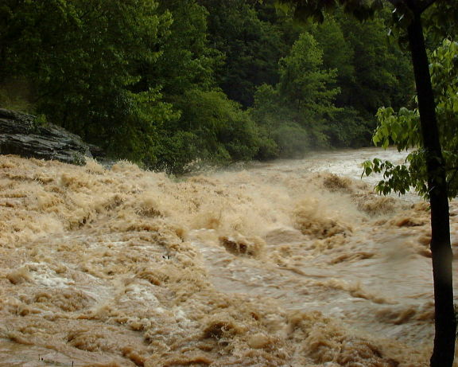
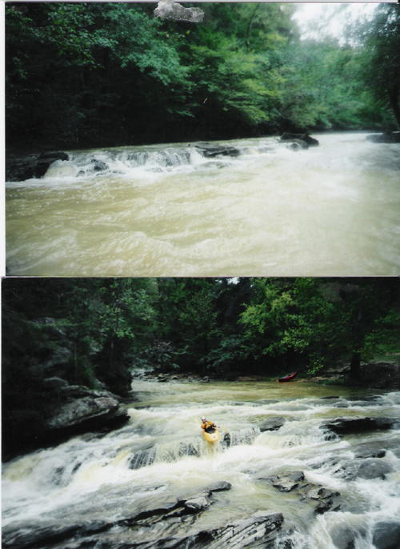
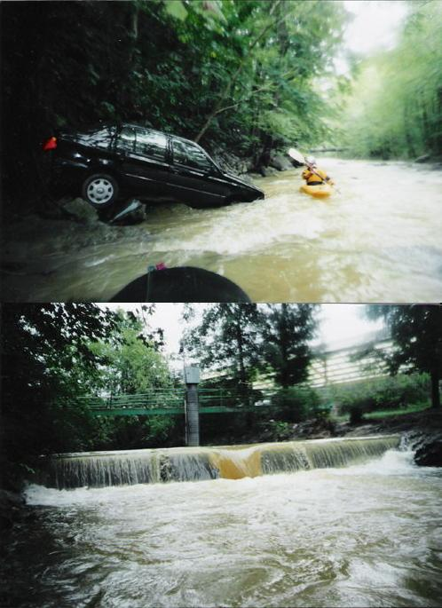

Turkey Creek
|  | The falls on Turkey at flood. It rained 10" in 4 hours in
Pinson this day. (photo courtesy Shane Hulsey) |
|  | A shoal on Turkey Brian McAnally on the falls at slightly lower water than the first picture on this page (photos courtesy John Duncan) |
|  | Brian next to some pretty nice river booty. Don't know how he got
in in his boat. The gage and sluice by the water treatment plant (photos courtesy John Duncan) |